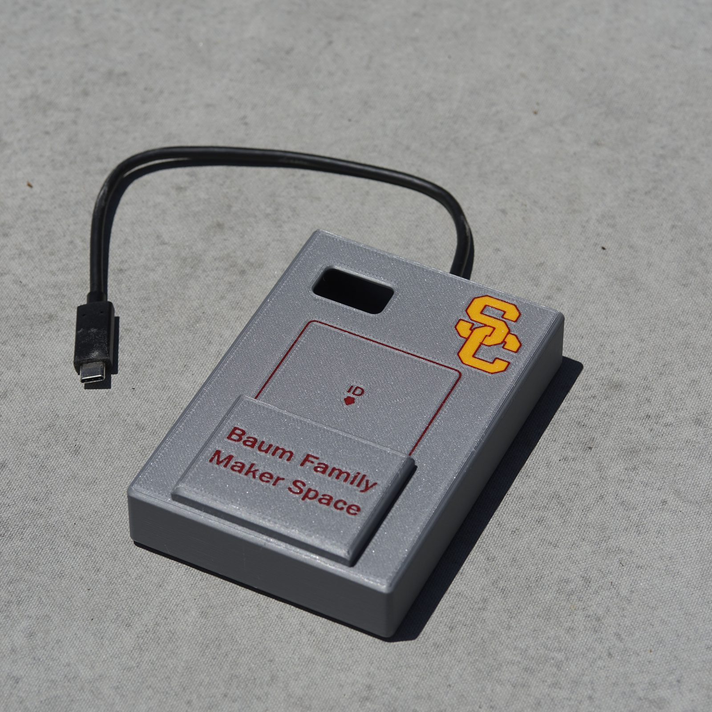
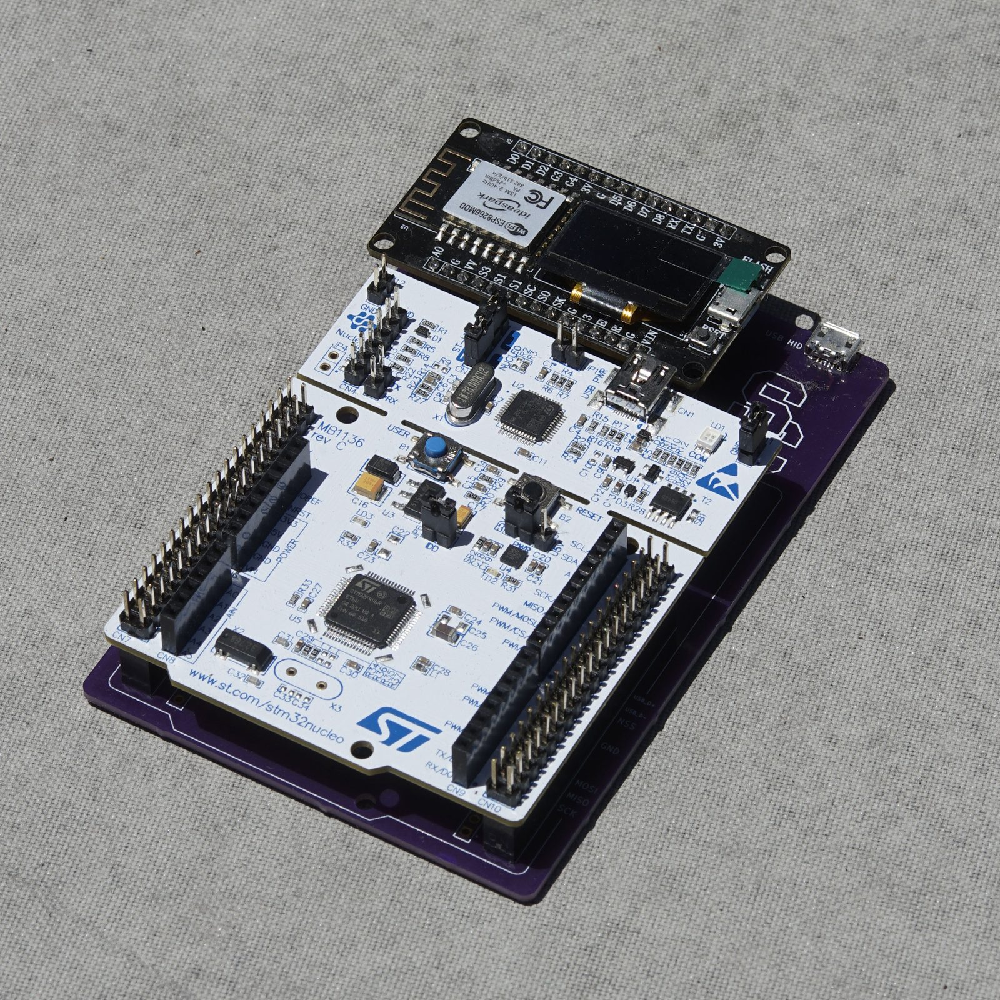

Access-control system for the Maker Space's laser cutters and waterjet, replacing shared passwords with university ID swipe access.
- Replaced shared passwords and lockout codes with university ID swipe access on 2 laser cutters and 1 waterjet cutter
- Developed ESP32 firmware in ESP-IDF (C/C++) for HID emulation and RFID UID reading
- Designed a custom carrier PCB and 3D-printed enclosure for the dev board assembly
- Building a cloud registration and user-approval pipeline with wireless UID database sync to each device
- Leading lab-wide rollout and designing a custom PN532 reader circuit to replace the dev board

